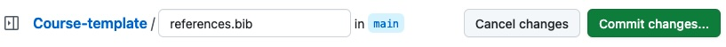
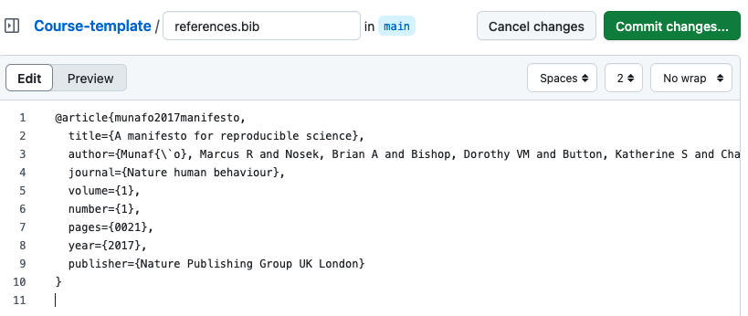
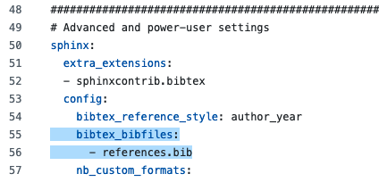

Adding Citations and Bibliographies#
To include citations in your course website, begin by creating a BibTeX file to store your references. Then, link it in the _config.yml file to ensure it’s recognized. Once set up, you can easily add citations and generate a bibliography to enhance your course content.
Create a Bibliography#
Create a new file in your repository and save it with the .bib extension to create a BibTeX file.

Then, add your references to the file and click on “Commit changes”.

Edit the Config File#
Open the _config.yml file and specify your BibTeX file as the source for citations by adding the following lines under the “sphinx: config:”
bibtex_bibfiles:
- references.bib
Please ensure the correct indentation.

Add a Citation#
Now, you can include your citations into your text. Here is an example:
{cite}`munafo2017manifesto`
Result: [Munafò et al., 2017]
Add a Bibliography#
To add a bibliography, you need to use the {bibliography} directive at the end of your page:
```{bibliography}
```
At the end of this page, you will see an example bibliography.
Next Section:#
In the next section, you will learn how to integrate feedback questions.
References
- MunafoNB+17
Marcus R Munafò, Brian A Nosek, Dorothy VM Bishop, Katherine S Button, Christopher D Chambers, Nathalie Percie du Sert, Uri Simonsohn, Eric-Jan Wagenmakers, Jennifer J Ware, and John PA Ioannidis. A manifesto for reproducible science. Nature human behaviour, 1(1):0021, 2017.